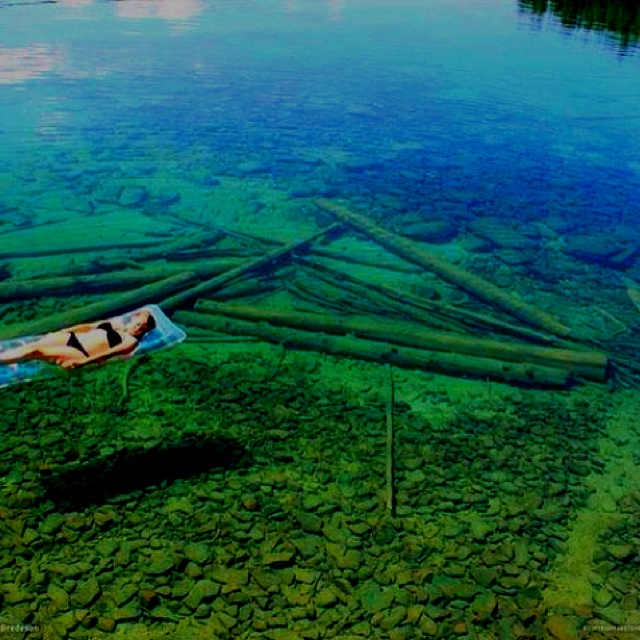

Flathead Lake is a large natural lake in northwest Montana and is the largest natural freshwater lake by surface area that is west of the source of the Missouri River in the contiguous United States. Located in the northwest corner of the state of Montana, 7 miles (11 km) south of Kalispell, it is approximately 30 miles (48 km) long and 16 miles (26 km) wide, covering 197 square miles (510 km2). It is about half the area of San Francisco Bay. Flathead Lake has a maximum depth of 370.7 ft (113.0 m),[1] and an average of 164.7 ft (50.2 m). This makes Flathead Lake deeper than the average depths of the Yellow Sea or the Persian Gulf. Flathead Lake is in a scenic part of Montana, 30 miles (48 km) southwest of Glacier National Park and is flanked by two scenic highways, which wind along its curving shoreline. On the west side is U.S. Route 93, and on the east, is Route 35.
